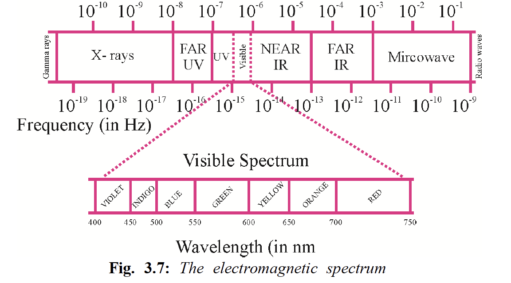
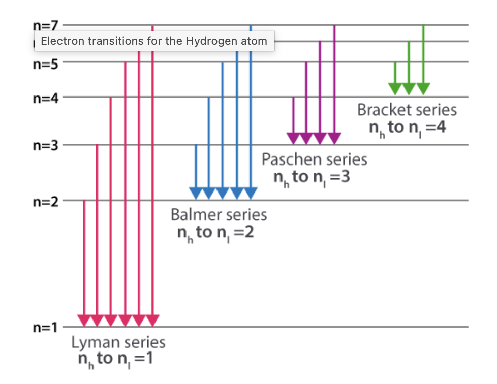
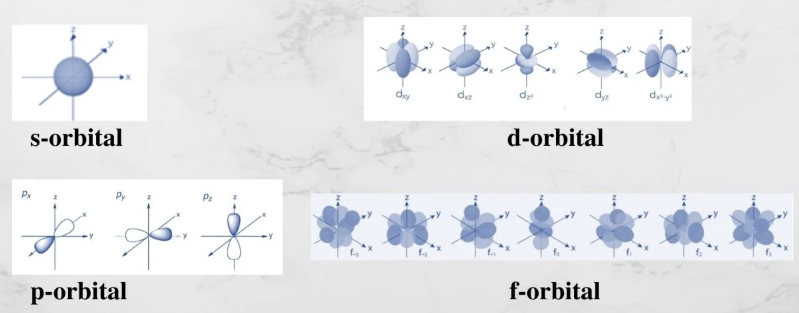

Answer: \((b)\ \frac{9x}{8}\)
Solution:
For hydrogen and hydrogen-like species, radius of the \(n^{\text{th}}\) orbit is given by:
\(r_n = \frac{n^2 a_0}{Z}\)
Given for hydrogen atom:
\(n = 2,\ Z = 1,\ r_n = x\ \text{pm}\)
So,
\(x = \frac{(2)^2 a_0}{1} = 4a_0\)
Therefore,
\(a_0 = \frac{x}{4}\)
For \(\mathrm{He}^+\):
\(n = 3,\ Z = 2\)
Hence,
\(r_n = \frac{(3)^2 a_0}{2} = \frac{9a_0}{2}\)
Substitute \(a_0 = \frac{x}{4}\):
\(r_n = \frac{9}{2}\cdot\frac{x}{4} = \frac{9x}{8}\)
Therefore:
\(\boxed{\frac{9x}{8}}\)
Why this works:
\(r_n \propto \frac{n^2}{Z}\)
JEE / NCERT takeaway:
\(r_n = \frac{n^2 a_0}{Z}\)
\(r_n = n^2 a_0\)
1-minute solving trick:
\(\frac{r_2}{r_1} = \frac{n_2^2/Z_2}{n_1^2/Z_1}\)
\(\frac{r(\mathrm{He}^+, n=3)}{r(\mathrm{H}, n=2)} = \frac{9/2}{4/1} = \frac{9}{8}\)
\(r(\mathrm{He}^+, n=3)=\frac{9x}{8}\)
Common mistakes to avoid:
Chapter / Topic / Subtopic:
Final exam-style answer:
Using Bohr’s formula:
\(r_n = \frac{n^2 a_0}{Z}\)
For hydrogen atom, \(n=2,\ Z=1\):
\(x = \frac{(2)^2 a_0}{1} = 4a_0\)
\(\Rightarrow a_0 = \frac{x}{4}\)
For \(\mathrm{He}^+\), \(n=3,\ Z=2\):
\(r_n = \frac{(3)^2 a_0}{2} = \frac{9a_0}{2}\)
\(= \frac{9}{2}\cdot\frac{x}{4} = \frac{9x}{8}\)
\(\boxed{(b)\ \frac{9x}{8}}\)
Quick cheatsheet:
\(r_n = \frac{n^2 a_0}{Z}\)
\(Z=1\)
One-electron species such as \(\mathrm{He}^+\), \(\mathrm{Li}^{2+}\), \(\mathrm{Be}^{3+}\)
\(r_n \propto n^2\)
\(r_n \propto \frac{1}{Z}\)
\(\frac{r_A}{r_B} = \frac{n_A^2/Z_A}{n_B^2/Z_B}\)
Answer: \((b)\ 4\)
Solution:
We use Einstein’s photoelectric equation:
\(K_{\max} = h\nu - \phi = \frac{hc}{\lambda} - \phi\)
Given:
Energy of incident photon:
\(E = \frac{hc}{\lambda}\)
\(E = \frac{6.626 \times 10^{-34} \times 3 \times 10^8}{310 \times 10^{-9}}\)
\(E = 6.412 \times 10^{-19}\ \mathrm{J}\)
\(\phi = 3.55\ \mathrm{eV}\)
Using \(1\ \mathrm{eV} = 1.6 \times 10^{-19}\ \mathrm{J}\):
\(\phi = 3.55 \times 1.6 \times 10^{-19}\)
\(\phi = 5.68 \times 10^{-19}\ \mathrm{J}\)
\(K_{\max} = E - \phi\)
\(K_{\max} = 6.412 \times 10^{-19} - 5.68 \times 10^{-19}\)
\(K_{\max} = 0.732 \times 10^{-19}\ \mathrm{J}\)
\(K_{\max} = \frac{1}{2}m_ev^2\)
So,
\(v = \sqrt{\frac{2K_{\max}}{m_e}}\)
\(v = \sqrt{\frac{2 \times 0.732 \times 10^{-19}}{9 \times 10^{-31}}}\)
\(v \approx 4 \times 10^5\ \mathrm{m\,s^{-1}}\)
Hence, \(x = 4\)
Therefore:
\(\boxed{(b)\ 4}\)
Why this method works:
\(K_{\max} = h\nu - \phi\)
\(K_{\max} = \frac{1}{2}mv^2\)
JEE / NCERT takeaway:
\(K_{\max} = h\nu - \phi\)
\(E = h\nu = \frac{hc}{\lambda}\)
\(\nu_0 = \frac{\phi}{h}\)
\(\lambda_0 = \frac{hc}{\phi}\)
1-minute solving trick:
\(E(\mathrm{eV}) = \frac{1240}{\lambda(\mathrm{nm})}\)
\(E = \frac{1240}{310} = 4\ \mathrm{eV}\)
\(K_{\max} = 4 - 3.55 = 0.45\ \mathrm{eV}\)
\(0.45 \times 1.6 \times 10^{-19} = 0.72 \times 10^{-19}\ \mathrm{J}\)
\(v = \sqrt{\frac{2K}{m}} \approx \sqrt{\frac{1.44 \times 10^{-19}}{9 \times 10^{-31}}}\)
\(v \approx \sqrt{0.16 \times 10^{12}} = 0.4 \times 10^6 = 4 \times 10^5\ \mathrm{m\,s^{-1}}\)
More intuitive way to think about it:
\(4 - 3.55 = 0.45\ \mathrm{eV}\)
Common mistakes to avoid:
\(K = \frac{1}{2}mv^2\)
Chapter / Topic / Subtopic:
Final exam-style answer:
Given \(\lambda = 310\ \mathrm{nm}\), \(\phi = 3.55\ \mathrm{eV}\).
Energy of incident photon:
\(E = \frac{hc}{\lambda} = 6.412 \times 10^{-19}\ \mathrm{J}\)
Work function in joules:
\(\phi = 3.55 \times 1.6 \times 10^{-19} = 5.68 \times 10^{-19}\ \mathrm{J}\)
So, maximum kinetic energy:
\(K_{\max} = E - \phi = 0.732 \times 10^{-19}\ \mathrm{J}\)
Now,
\(v = \sqrt{\frac{2K_{\max}}{m_e}} = \sqrt{\frac{2 \times 0.732 \times 10^{-19}}{9 \times 10^{-31}}}\)
\(v \approx 4 \times 10^5\ \mathrm{m\,s^{-1}}\)
Hence,
\(\boxed{x=4}\)
Quick cheatsheet:
\(E = h\nu = \frac{hc}{\lambda}\)
\(E(\mathrm{eV}) = \frac{1240}{\lambda(\mathrm{nm})}\)
\(K_{\max} = h\nu - \phi\)
Minimum energy needed to eject an electron
\(h\nu \ge \phi\)
\(K_{\max} = \frac{1}{2}mv^2\)
\(1\ \mathrm{eV} = 1.6 \times 10^{-19}\ \mathrm{J}\)
\(\lambda_0 = \frac{hc}{\phi}\)
Answer: \((d)\ 3.17 \times 10^{15}\ \text{Hz}\)
Solution:
For hydrogen atom, the energy of electron in the \(n^\text{th}\) orbit is:
\(E_n = \dfrac{E_1}{n^2}\)
Given:
\(E_5 = \dfrac{-2.18 \times 10^{-18}}{5^2}\)
\(E_5 = \dfrac{-2.18 \times 10^{-18}}{25}\)
\(E_5 = -8.72 \times 10^{-20}\ \text{J}\)
\(\Delta E = E_5 - E_1\)
\(\Delta E = (-8.72 \times 10^{-20}) - (-2.18 \times 10^{-18})\)
\(\Delta E = 2.0928 \times 10^{-18}\ \text{J}\)
\(\Delta E = h\nu\)
\(\nu = \dfrac{\Delta E}{h}\)
\(\nu = \dfrac{2.0928 \times 10^{-18}}{6.6 \times 10^{-34}}\)
\(\nu = 3.17 \times 10^{15}\ \text{Hz}\)
Therefore:
\(\boxed{(d)\ 3.17 \times 10^{15}\ \text{Hz}}\)
Why this method works:
\(E_n \propto -\dfrac{1}{n^2}\)
\(\Delta E = h\nu\)
JEE / NCERT takeaway:
\(E_n = -\dfrac{2.18 \times 10^{-18}}{n^2}\ \text{J}\)
\(\Delta E = E_f - E_i\)
\(\nu = \dfrac{\Delta E}{h}\)
1-minute solving trick:
\(\Delta E = 2.18 \times 10^{-18}\left(1 - \dfrac{1}{n^2}\right)\)
\(\Delta E = 2.18 \times 10^{-18}\left(1 - \dfrac{1}{25}\right)\)
\(\Delta E = 2.18 \times 10^{-18}\cdot \dfrac{24}{25}\)
\(\nu = \dfrac{\Delta E}{6.6 \times 10^{-34}}\)
How to think intuitively:
\(E_1 = -2.18 \times 10^{-18}\ \text{J}\)
\(E_5 = -8.72 \times 10^{-20}\ \text{J}\)
Common mistakes to avoid:
\(E_n = \dfrac{E_1}{n^2}\)
Chapter / Topic / Subtopic:
Final exam-style answer:
For hydrogen atom:
\(E_n = \dfrac{E_1}{n^2}\)
So for \(n=5\):
\(E_5 = \dfrac{-2.18 \times 10^{-18}}{25} = -8.72 \times 10^{-20}\ \text{J}\)
Energy required to excite electron from first orbit to fifth orbit:
\(\Delta E = E_5 - E_1\)
\(\Delta E = (-8.72 \times 10^{-20}) - (-2.18 \times 10^{-18})\)
\(\Delta E = 2.0928 \times 10^{-18}\ \text{J}\)
Using:
\(\Delta E = h\nu\)
\(\nu = \dfrac{2.0928 \times 10^{-18}}{6.6 \times 10^{-34}}\)
\(\nu = 3.17 \times 10^{15}\ \text{Hz}\)
\(\boxed{(d)\ 3.17 \times 10^{15}\ \text{Hz}}\)
Quick cheatsheet:
\(E_n = -\dfrac{2.18 \times 10^{-18}}{n^2}\ \text{J}\)
\(\Delta E = E_f - E_i\)
\(\nu = \dfrac{\Delta E}{h}\)
Answer: \((a)\ 0\)
Solution:
Azimuthal quantum number \(l\) tells the subshell:
So in this question:
\(\mathrm{Sr} = 1s^2\,2s^2\,2p^6\,3s^2\,3p^6\,4s^2\,3d^{10}\,4p^6\,5s^2\)
Or, in noble gas form:
\([\mathrm{Kr}]\,5s^2\)
Since \(l=0\) corresponds to the \(s\)-subshell, count all \(s\)-electrons:
Therefore:
\(x = 2+2+2+2+2 = 10\)
Since \(l=2\) corresponds to the \(d\)-subshell, count all \(d\)-electrons:
Therefore:
\(y = 10\)
\(x-y = 10-10 = 0\)
Therefore:
\(\boxed{(a)\ 0}\)
Why this method works:
\(s \rightarrow l=0,\quad p \rightarrow l=1,\quad d \rightarrow l=2,\quad f \rightarrow l=3\)
JEE / NCERT takeaway:
\(l = 0,1,2,3 \Rightarrow s,p,d,f\)
\(s=2,\quad p=6,\quad d=10,\quad f=14\)
\([\mathrm{Kr}]\,5s^2\)
1-minute solving trick:
\(\mathrm{Sr} = [\mathrm{Kr}]\,5s^2\)
\(1s, 2s, 3s, 4s, 5s \Rightarrow 5 \text{ filled } s\text{-subshells}\)
\(x = 5 \times 2 = 10\)
\(y = 10\)
\(x-y = 10-10 = 0\)
How to think intuitively:
\(l=0 \Rightarrow s\text{-electrons}\)
\(l=2 \Rightarrow d\text{-electrons}\)
Common mistakes to avoid:
\(l=1 \rightarrow p\)
\(l=2 \rightarrow d\)
Chapter / Topic / Subtopic:
Final exam-style answer:
For \(\mathrm{Sr}(Z=38)\), electronic configuration is:
\(1s^2\,2s^2\,2p^6\,3s^2\,3p^6\,4s^2\,3d^{10}\,4p^6\,5s^2\)
Electrons with \(l=0\) are \(s\)-electrons:
\(x = 2+2+2+2+2 = 10\)
Electrons with \(l=2\) are \(d\)-electrons:
\(y = 10\)
Hence:
\(x-y = 10-10 = 0\)
\(\boxed{(a)\ 0}\)
Quick cheatsheet:
\(l=0 \rightarrow s,\quad l=1 \rightarrow p,\quad l=2 \rightarrow d,\quad l=3 \rightarrow f\)
\(s=2,\quad p=6,\quad d=10,\quad f=14\)
\([\mathrm{Kr}]\,5s^2\)
\(10\)
\(10\)
\(x-y=0\)
Answer: \((c)\ \dfrac{1}{R_H}\left(\dfrac{101}{24}\right)\)
Solution:
We use the Rydberg relation for hydrogen spectral lines:
\(\dfrac{1}{\lambda} = R_H\left(\dfrac{1}{n_1^2} - \dfrac{1}{n_2^2}\right)\), where \(n_2 > n_1\).
For transition \(n = 4 \rightarrow n = 2\):
\(\dfrac{1}{\lambda_1} = R_H\left(\dfrac{1}{2^2} - \dfrac{1}{4^2}\right)\)
\(= R_H\left(\dfrac{1}{4} - \dfrac{1}{16}\right)\)
\(= R_H\left(\dfrac{3}{16}\right)\)
So, \(\lambda_1 = \dfrac{16}{3R_H}\)
For transition \(n = 3 \rightarrow n = 1\):
\(\dfrac{1}{\lambda_2} = R_H\left(\dfrac{1}{1^2} - \dfrac{1}{3^2}\right)\)
\(= R_H\left(1 - \dfrac{1}{9}\right)\)
\(= R_H\left(\dfrac{8}{9}\right)\)
So, \(\lambda_2 = \dfrac{9}{8R_H}\)
\(\lambda_1 - \lambda_2 = \dfrac{16}{3R_H} - \dfrac{9}{8R_H}\)
Taking LCM \(= 24R_H\):
\(\lambda_1 - \lambda_2 = \dfrac{128 - 27}{24R_H}\)
\(= \dfrac{101}{24R_H}\)
\(= \dfrac{1}{R_H}\left(\dfrac{101}{24}\right)\)
Therefore:
\(\boxed{(c)\ \dfrac{1}{R_H}\left(\dfrac{101}{24}\right)}\)
Why this method works:
\(\bar{\nu} = \dfrac{1}{\lambda} = R_H\left(\dfrac{1}{n_1^2} - \dfrac{1}{n_2^2}\right)\)
\(\dfrac{1}{\lambda_1} - \dfrac{1}{\lambda_2}\)
This is not equal to \(\lambda_1 - \lambda_2\).
JEE / NCERT takeaway:
\(\dfrac{1}{\lambda} = RZ^2\left(\dfrac{1}{n_1^2} - \dfrac{1}{n_2^2}\right)\)
For hydrogen, \(Z = 1\).
Useful physical picture:
\(\lambda_2 < \lambda_1\)
Hence \(\lambda_1 - \lambda_2\) must be positive, which already rules out any sign-related confusion.
1-minute solving trick:
\(\dfrac{1}{2^2} - \dfrac{1}{4^2} = \dfrac{1}{4} - \dfrac{1}{16} = \dfrac{3}{16}\)
\(\dfrac{1}{1^2} - \dfrac{1}{3^2} = 1 - \dfrac{1}{9} = \dfrac{8}{9}\)
\(\lambda_1 = \dfrac{16}{3R_H},\quad \lambda_2 = \dfrac{9}{8R_H}\)
\(\lambda_1 - \lambda_2 = \dfrac{16}{3R_H} - \dfrac{9}{8R_H}\)
\(\dfrac{128 - 27}{24R_H} = \dfrac{101}{24R_H}\)
Common mistakes to avoid:
\(\dfrac{1}{\lambda} = R_H\left(\dfrac{1}{n_1^2} - \dfrac{1}{n_2^2}\right)\)
Chapter / Topic / Subtopic:
Quick theory sheet:
\(\dfrac{1}{\lambda} = R_H\left(\dfrac{1}{n_1^2} - \dfrac{1}{n_2^2}\right)\)
\(\bar{\nu} = \dfrac{1}{lambda}\)
Final exam-style answer:
For \(n=4 \rightarrow n=2\):
\(\dfrac{1}{\lambda_1} = R_H\left(\dfrac{1}{2^2} - \dfrac{1}{4^2}\right) = R_H\left(\dfrac{1}{4} - \dfrac{1}{16}\right) = \dfrac{3R_H}{16}\)
So, \(\lambda_1 = \dfrac{16}{3R_H}\)
For \(n=3 \rightarrow n=1\):
\(\dfrac{1}{\lambda_2} = R_H\left(\dfrac{1}{1^2} - \dfrac{1}{3^2}\right) = R_H\left(1 - \dfrac{1}{9}\right) = \dfrac{8R_H}{9}\)
So, \(\lambda_2 = \dfrac{9}{8R_H}\)
Hence:
\(\lambda_1 - \lambda_2 = \dfrac{16}{3R_H} - \dfrac{9}{8R_H}\)
\(= \dfrac{128 - 27}{24R_H} = \dfrac{101}{24R_H}\)
\(= \dfrac{1}{R_H}\left(\dfrac{101}{24}\right)\)
\(\boxed{(c)\ \dfrac{1}{R_H}\left(\dfrac{101}{24}\right)}\)
Answer: \((c)\ M_1,\ M_2,\ M_3\ \text{only}\)
Solution:
Photoelectric effect occurs only when the energy of the incident photon is at least equal to the work function of the metal.
So the condition is:
\(E_{\text{photon}} \ge \phi\)
For light of wavelength \(310\ \text{nm}\), photon energy in eV can be calculated using:
\(E = \dfrac{1240}{\lambda(\text{in nm})}\)
Therefore:
\(E = \dfrac{1240}{310} = 4.0\ \text{eV}\)
A metal will show photoelectric effect only if its work function is less than or equal to \(4.0\ \text{eV}\).
So:
The metals which do not show photoelectric effect are:
\(M_1,\ M_2,\ M_3\)
Therefore:
\(\boxed{(c)\ M_1,\ M_2,\ M_3\ \text{only}}\)
Why this method works:
\(E_{\text{photon}} < \phi\)
then no electron is emitted, no matter how intense the light is.
\(E_{\text{photon}} \ge \phi\)
then photoelectric emission is possible.
JEE / NCERT takeaway:
\(h\nu = \phi + K_{\max}\)
\(h\nu \ge \phi\)
\(\nu_0 = \dfrac{\phi}{h}\)
\(\lambda_0 = \dfrac{hc}{\phi}\)
\(E(\text{eV}) = \dfrac{1240}{\lambda(\text{nm})}\)
Useful physical picture:
1-minute solving trick:
\(E(\text{eV}) = \dfrac{1240}{\lambda(\text{nm})}\)
\(E = \dfrac{1240}{310} = 4.0\ \text{eV}\)
\(M_1,\ M_2,\ M_3\)
Common mistakes to avoid:
\(\dfrac{1240}{310} = 4.0\ \text{eV}\)
Chapter / Topic / Subtopic:
Quick cheatsheet:
\(h\nu = \phi + K_{\max}\)
\(h\nu \ge \phi\)
\(h\nu < \phi\)
\(\nu_0 = \dfrac{\phi}{h}\)
\(\lambda_0 = \dfrac{hc}{\phi}\)
\(E(\text{eV}) = \dfrac{1240}{\lambda(\text{nm})}\)
Final exam-style answer:
Energy of incident photon:
\(E = \dfrac{1240}{310} = 4.0\ \text{eV}\)
Given work functions:
Only metals with \(\phi \le 4.0\ \text{eV}\) can emit electrons.
Thus \(M_1,\ M_2,\ M_3\) do not show photoelectric effect, while \(M_4\) does.
\(\boxed{(c)\ M_1,\ M_2,\ M_3\ \text{only}}\)
Answer: \((b)\ \mathrm{Li}^{2+}(n=3),\ \mathrm{Be}^{3+}(n=4)\)
Solution:
For one-electron species such as \(\mathrm{H}\), \(\mathrm{He}^+\), \(\mathrm{Li}^{2+}\), \(\mathrm{Be}^{3+}\), the energy of the electron in the \(n^{\text{th}}\) orbit is:
\[ E_n = -13.6\frac{Z^2}{n^2}\ \text{eV} \]
Here, \(Z\) is the atomic number and \(n\) is the principal quantum number.
So, two species will have the same energy if \(\dfrac{Z^2}{n^2}\) is the same for both.
For \(\mathrm{H}\): \(Z=1,\ n=1\)
\[ E = -13.6\frac{1^2}{1^2} = -13.6\ \text{eV} \]
For \(\mathrm{Li}^{2+}\): \(Z=3,\ n=1\)
\[ E = -13.6\frac{3^2}{1^2} = -122.4\ \text{eV} \]
Not same.
For \(\mathrm{Li}^{2+}\): \(Z=3,\ n=3\)
\[ E = -13.6\frac{3^2}{3^2} = -13.6\ \text{eV} \]
For \(\mathrm{Be}^{3+}\): \(Z=4,\ n=4\)
\[ E = -13.6\frac{4^2}{4^2} = -13.6\ \text{eV} \]
Both have same energy.
For \(\mathrm{He}^+\): \(Z=2,\ n=1\)
\[ E = -13.6\frac{2^2}{1^2} = -54.4\ \text{eV} \]
For \(\mathrm{Li}^{2+}\): \(Z=3,\ n=3\)
\[ E = -13.6\frac{3^2}{3^2} = -13.6\ \text{eV} \]
Not same.
For \(\mathrm{H}\): \(Z=1,\ n=3\)
\[ E = -13.6\frac{1^2}{3^2} = -\frac{13.6}{9}\ \text{eV} \]
For \(\mathrm{Li}^{2+}\): \(Z=3,\ n=3\)
\[ E = -13.6\frac{3^2}{3^2} = -13.6\ \text{eV} \]
Not same.
\[ \boxed{(b)\ \mathrm{Li}^{2+}(n=3),\ \mathrm{Be}^{3+}(n=4)} \]
Core theory you should know:
\[ E_n \propto -\frac{Z^2}{n^2} \]
JEE / NCERT takeaway:
\[ E_n = -\frac{13.6}{n^2}\ \text{eV} \]
\[ E_n = -13.6\frac{Z^2}{n^2}\ \text{eV} \]
\[ r_n = a_0\frac{n^2}{Z} \]
\[ v_n \propto \frac{Z}{n} \]
Fast 1-minute solving trick:
\[ \frac{Z^2}{n^2} \]
\[ \frac{3^2}{3^2}=1,\qquad \frac{4^2}{4^2}=1 \]
So energies are immediately same.
if \(Z=n\), then \(\dfrac{Z^2}{n^2}=1\), so energy becomes \(-13.6\ \text{eV}\).
Both \(\mathrm{Li}^{2+}(n=3)\) and \(\mathrm{Be}^{3+}(n=4)\) follow this.
Common mistakes to avoid:
Intuitive memory aid:
\[ E_n \propto -\left(\frac{Z}{n}\right)^2 \]
equal \(\dfrac{Z}{n}\) means equal energy.\[ \frac{3}{3}=1,\qquad \frac{4}{4}=1 \]
so same energy.Chapter / Topic / Subtopic:
Final exam-style answer:
For hydrogen-like species,
\[ E_n = -13.6\frac{Z^2}{n^2}\ \text{eV} \]
For \(\mathrm{Li}^{2+}(n=3)\):
\[ E = -13.6\frac{3^2}{3^2} = -13.6\ \text{eV} \]
For \(\mathrm{Be}^{3+}(n=4)\):
\[ E = -13.6\frac{4^2}{4^2} = -13.6\ \text{eV} \]
Therefore, both have the same energy.
\(\boxed{(b)\ \mathrm{Li}^{2+}(n=3),\ \mathrm{Be}^{3+}(n=4)}\)
Quick cheatsheet:
\[ E_n = -13.6\frac{Z^2}{n^2}\ \text{eV} \]
\[ \frac{Z_1^2}{n_1^2}=\frac{Z_2^2}{n_2^2} \]
\[ \frac{Z_1}{n_1}=\frac{Z_2}{n_2} \]
\[ r_n = a_0\frac{n^2}{Z} \]
\[ E_n = -13.6\ \text{eV} \]
Answer: \((b)\ \dfrac{100}{21R}\)
Solution:
The wavelength of a spectral line in hydrogen atom is given by:
\(\dfrac{1}{\lambda}=R\left(\dfrac{1}{n_f^2}-\dfrac{1}{n_i^2}\right)\)
where:
In the Balmer series, all transitions end at:
\(n_f = 2\)
The Balmer lines are:
Here the required line corresponds to the third line of Balmer series, so:
\(n_i = 5,\quad n_f = 2\)
\(\dfrac{1}{\lambda}=R\left(\dfrac{1}{2^2}-\dfrac{1}{5^2}\right)\)
\(\dfrac{1}{\lambda}=R\left(\dfrac{1}{4}-\dfrac{1}{25}\right)\)
\(\dfrac{1}{\lambda}=R\left(\dfrac{25-4}{100}\right)\)
\(\dfrac{1}{\lambda}=\dfrac{21R}{100}\)
Therefore:
\(\lambda=\dfrac{100}{21R}\)
Therefore:
\(\boxed{(b)\ \dfrac{100}{21R}}\)
Why this method works:
\(n_f=2\)
JEE / NCERT takeaway:
\(\dfrac{1}{\lambda}=R\left(\dfrac{1}{n_1^2}-\dfrac{1}{n_2^2}\right)\)
with \(n_2>n_1\)
\(n_f=1\)
Ultraviolet region
\(n_f=2\)
Visible region
\(n_f=3\)
Infrared region
\(n_f=4\)
\(n_f=5\)
1-minute solving trick:
\(\text{Balmer} \Rightarrow n_f=2\)
\(\dfrac{1}{\lambda}=R\left(\dfrac{1}{4}-\dfrac{1}{25}\right)\)
\(\dfrac{1}{4}-\dfrac{1}{25}=\dfrac{25-4}{100}=\dfrac{21}{100}\)
\(\lambda=\dfrac{100}{21R}\)
Common mistakes to avoid:
Series map to remember:
Lyman : \(n_i = 2,3,4,\dots \to n_f=1\)
Balmer : \(n_i = 3,4,5,\dots \to n_f=2\)
Paschen : \(n_i = 4,5,6,\dots \to n_f=3\)
Chapter / Topic / Subtopic:
Final exam-style answer:
For Balmer series, \(n_f=2\).
For the third Balmer line, \(n_i=5\).
Using Rydberg equation:
\(\dfrac{1}{\lambda}=R\left(\dfrac{1}{2^2}-\dfrac{1}{5^2}\right)\)
\(\dfrac{1}{\lambda}=R\left(\dfrac{1}{4}-\dfrac{1}{25}\right)\)
\(\dfrac{1}{\lambda}=R\left(\dfrac{21}{100}\right)\)
Hence:
\(\lambda=\dfrac{100}{21R}\)
\(\boxed{(b)\ \dfrac{100}{21R}}\)
Quick cheatsheet:
\(\dfrac{1}{\lambda}=R\left(\dfrac{1}{n_f^2}-\dfrac{1}{n_i^2}\right)\)
\(n_f=1\)
\(n_f=2\)
\(n_f=3\)
\(5 \to 2\)
\(\text{\(m^{\text{th}}\) line of a series} \Rightarrow n_i=n_f+m\)
\(\text{\(m^{\text{th}}\) line} \Rightarrow n_i=2+m\)
For any hydrogen-like species, the radius of the \(n^{\text{th}}\) orbit is given by:
\(r_n = \frac{n^2}{Z}a_0\)
where \(Z\) is the atomic number and \(a_0 = 52.9\ \mathrm{pm}\).
This formula is used for one-electron species such as \(\mathrm{H}\), \(\mathrm{He^+}\), \(\mathrm{Li^{2+}}\) etc.
For hydrogen, \(Z = 1\).
Given that the radius of the third orbit is \(R\) pm:
\(R = \frac{3^2}{1}a_0 = 9a_0\)
For \(\mathrm{He^+}\), \(Z = 2\) because helium has atomic number 2.
For the second orbit, \(n = 2\):
\(r = \frac{2^2}{2}a_0 = \frac{4}{2}a_0 = 2a_0\)
We have:
\(R = 9a_0\)
and
\(r = 2a_0\)
Therefore:
\(\frac{r}{R} = \frac{2a_0}{9a_0} = \frac{2}{9}\)
So:
\(r = \frac{2}{9}R\)
\(\boxed{r = \frac{2}{9}R}\)
In Bohr model, orbital radius increases as \(n^2\), so higher orbit means larger radius.
But radius also decreases as \(Z\) increases, because a larger nuclear charge pulls the electron closer.
So for \(\mathrm{He^+}\), even though we are taking the second orbit, the stronger nucleus \((Z=2)\) makes the orbit smaller than one may first expect.
Use proportionality directly:
\(r \propto \frac{n^2}{Z}\)
For hydrogen third orbit:
\(R \propto \frac{3^2}{1} = 9\)
For \(\mathrm{He^+}\) second orbit:
\(r \propto \frac{2^2}{2} = 2\)
Hence immediately:
\(\frac{r}{R} = \frac{2}{9}\)
Some students use \(r \propto n^2\) only and forget the division by \(Z\). That would be wrong for hydrogen-like ions.
Chapter: Structure of Atom
Topic: Bohr model for hydrogen and hydrogen-like species
Subtopic: Radius of orbit, dependence on \(n\) and \(Z\)
This is a direct application of Einstein's photoelectric equation:
\(h\nu = h\nu_0 + K E_{\max}\)
So,
\(K E_{\max} = h(\nu - \nu_0)\)
Here \(\nu_0\) is the threshold frequency.
For the first radiation:
\((K E_{\max})_1 = h(\nu_1 - \nu_0)\)
\((K E_{\max})_1 = h(1.5 \times 10^{15} - 1.0 \times 10^{15})\)
\((K E_{\max})_1 = h(0.5 \times 10^{15})\)
For the second radiation:
\((K E_{\max})_2 = h(\nu_2 - \nu_0)\)
\((K E_{\max})_2 = h(2.0 \times 10^{15} - 1.0 \times 10^{15})\)
\((K E_{\max})_2 = h(1.0 \times 10^{15})\)
\(\frac{(K E_{\max})_1}{(K E_{\max})_2} = \frac{h(0.5 \times 10^{15})}{h(1.0 \times 10^{15})}\)
\(= \frac{0.5}{1} = \frac{1}{2}\)
Hence:
\((K E_{\max})_1 : (K E_{\max})_2 = 1:2\)
\(\boxed{1:2}\)
The threshold frequency is the minimum frequency needed to just eject electrons from the metal surface.
At \(\nu = \nu_0\), electrons are emitted with zero maximum kinetic energy.
If the frequency is greater than \(\nu_0\), the extra energy appears as kinetic energy of the emitted electrons.
In ratio questions, Planck's constant \(h\) usually cancels out.
So you often do not need numerical calculation of energy in joules or electron volts.
Just use:
\(K E_{\max} \propto (\nu - \nu_0)\)
Subtract threshold frequency mentally:
Therefore the ratio is \(0.5:1.0 = 1:2\).
Chapter: Structure of Atom / Dual Nature of Radiation and Matter
Topic: Photoelectric effect
Subtopic: Einstein photoelectric equation, threshold frequency, maximum kinetic energy
Answer: \((c)\) (A) is true but (R) is false.
Solution:
Nitrogen has electronic configuration \(\mathrm{1s^2\,2s^2\,2p^3}\).
Oxygen has electronic configuration \(\mathrm{1s^2\,2s^2\,2p^4}\).
In nitrogen, the three \(2p\) electrons occupy three different orbitals:
\(\mathrm{2p_x^1\,2p_y^1\,2p_z^1}\)
This is a half-filled \(p\)-subshell, which is extra stable.
In oxygen, one of the \(2p\) orbitals contains a pair of electrons, so there is some electron-electron repulsion inside that orbital.
Because of this repulsion, removing one electron from oxygen is slightly easier than removing one from nitrogen.
Therefore, first ionisation enthalpy of oxygen is less than that of nitrogen.
So Assertion (A) is true.
The reason says half-filled or completely filled orbitals are less stable.
This is incorrect.
In fact, half-filled and completely filled subshells are more stable.
That extra stability is due to better symmetry and lower repulsion effects.
So Reason (R) is false.
Assertion is true, but Reason is false.
Therefore, the correct answer is \(\boxed{(c)}\).
Why nitrogen is more stable than oxygen here:
\(\mathrm{2p^3}\) means one electron in each \(p\)-orbital.
\(\mathrm{2p^4}\) means one orbital gets a pair of electrons.
Simple orbital picture:
Nitrogen: 2p ↑ ↑ ↑
Oxygen: 2p ↑↓ ↑ ↑
JEE / NCERT takeaway:
\(\mathrm{IE_1(N) > IE_1(O)}\)
\(\mathrm{N = 2p^3}\) is half-filled and especially stable.
1-minute solving trick:
\(\mathrm{N > O}\) in first ionisation enthalpy.
half-filled = extra stable.
\(\boxed{(c)}\)
Chapter / Topic / Subtopic:
Final exam-style answer:
Nitrogen has configuration \(\mathrm{1s^2\,2s^2\,2p^3}\), which is a half-filled \(p\)-subshell and is extra stable. Oxygen has configuration \(\mathrm{1s^2\,2s^2\,2p^4}\), where one \(p\)-orbital contains a pair of electrons causing extra repulsion. Hence, an electron is removed more easily from oxygen than from nitrogen, so first ionisation enthalpy of oxygen is less than that of nitrogen. Therefore Assertion is true.
The Reason is false because half-filled and completely filled orbitals are more stable, not less stable.
\(\boxed{(c)\text{ Assertion is true but Reason is false}}\)
Quick cheatsheet:
Energy needed to remove the outermost electron from an isolated gaseous atom.
Across a period, ionisation enthalpy usually increases.
\(\mathrm{IE_1(N) > IE_1(O)}\)
\(\mathrm{N = 2p^3}\) is half-filled and more stable.
\(\mathrm{2p^4}\) has one paired electron, so repulsion increases.
Half-filled and fully filled subshells have extra stability.
Answer: \((d)\ 3\)
Solution:
A metal shows photoelectric effect only if the incoming light gives enough energy to remove an electron from the metal surface.
That minimum required energy is called the work function, written as \(\phi\).
So the rule is: photoelectric effect occurs when photon energy \(\ge \phi\).
Wavelength given: \(\lambda = 300\ \text{nm} = 300 \times 10^{-9}\ \text{m}\)
Photon energy is: \(E = \dfrac{hc}{\lambda}\)
Using standard values:
So, \(E = \dfrac{6.63 \times 10^{-34} \times 3 \times 10^8}{300 \times 10^{-9}}\)
Converting into electron volts gives: \(E \approx 4.14\ \text{eV}\)
Now compare each one with incident energy \(4.14\ \text{eV}\):
The metals that show photoelectric effect are: Li, Mg and K
Therefore, the number of metals is \(3\).
Therefore:
\(\boxed{(d)\ 3}\)
Layman understanding:
JEE / NCERT takeaway:
\(h\nu = \phi + K_{\max}\)
\(h\nu = \phi\)
then electrons are just emitted with zero kinetic energy.
\(\nu_0 = \dfrac{\phi}{h}\)
\(\lambda_0 = \dfrac{hc}{\phi}\)
\(h\nu \ge \phi\)
or equivalently
\(\lambda \le \lambda_0\)
Useful shortcut for exams:
\(E(\text{eV}) \approx \dfrac{1240}{\lambda(\text{nm})}\)
\(E = \dfrac{1240}{300} \approx 4.13\ \text{eV}\)
1-minute solving trick:
\(E(\text{eV}) = \dfrac{1240}{\lambda(\text{nm})}\)
\(E \approx 4.13\ \text{eV}\)
Chapter / Topic / Subtopic:
Final exam-style answer:
For photoelectric effect to occur, photon energy must be at least equal to the work function: \(E \ge \phi\).
For radiation of wavelength \(300\ \text{nm}\), \(E = \dfrac{hc}{\lambda} \approx 4.14\ \text{eV}\).
Comparing with given work functions:
Hence, 3 metals show photoelectric effect.
\(\boxed{(d)\ 3}\)
Quick cheatsheet:
\(E = h\nu = \dfrac{hc}{\lambda}\)
\(E(\text{eV}) \approx \dfrac{1240}{\lambda(\text{nm})}\)
\(h\nu \ge \phi\)
\(\nu_0 = \dfrac{\phi}{h}\)
\(\lambda_0 = \dfrac{hc}{\phi}\)
\(K_{\max} = h\nu - \phi\)